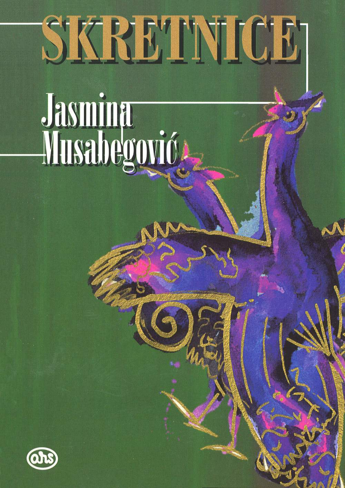
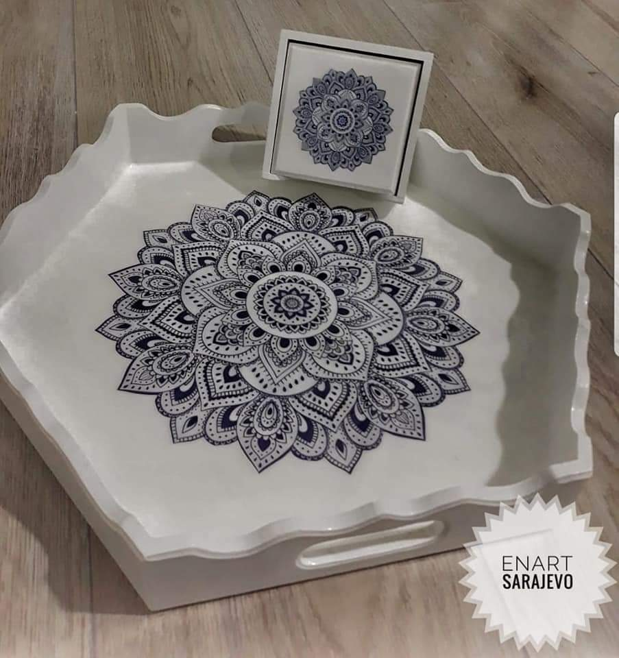
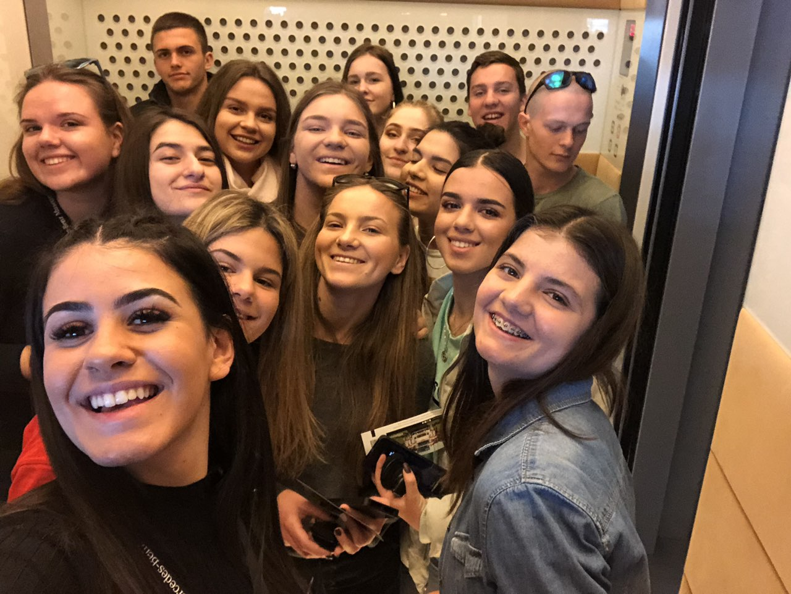
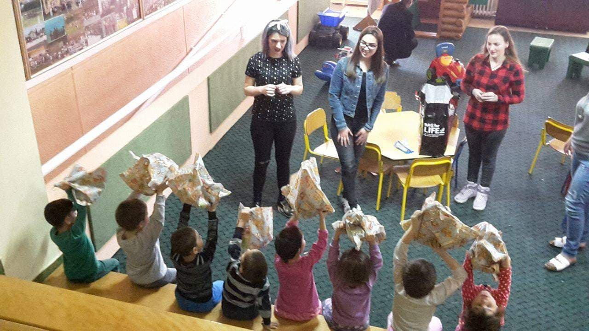

INSTAGRAM: @enaisen
E-MAIL: enaisen@gmail.com
BROJ TELEFONA: +387 62 694250
GODINE: 21
Biografija
Zovem se Ena Isen, rođena sam 25.02.2000.godine u Sarajevu. Studentica sam prve godine na Prirodno-Matematičkom fakultetu, smjer Informacione tehnologije. Završila sam Drugu gimnaziju Sarajevo IB, odnosno pohađala sam internacionalni smijer. Živim sa svojom porodicom u naselju Semizovac, gdje sam i završila osnovnu školu, kao odličan đak. Pohađala sam kurseve, od kojih bih izdvojila kurs Engleskog i Njemačkog jezika. Također, aktivan sam član sudijskog udruženja „Udruženja fudbalskih sudija i instruktora Kantona Sarajevo“, odnosno trenutno sam fudbalski sudija, gdje sam često bila prisutna na raznim seminarima, koji su vezani za moj trenutni hobi, a to je fudbalsko suđenje. Kroz osnovnu, a i srednju školu sam također išla na kreativne radionice te sam obavljala društveno koristan rad. Volontirala sam na raznoraznim Bazarima, koji su se održavali u našoj zemlji, učestvovala u humanitarnim akcijama. Bila sam angažovana pri prikupljanju novčanih sredstava te učestvovala u podizanju svjesti o zagađenju naše Domovine. Kao volonter sam radila u udrženju „Zlatni Kist“, koje se bavi izradom ručnih radova, odnosno tehnikom dekupaž. Inače sam jako kreativna, ambicionza, pozitivna osoba, koja se trudi da iste osobine prenese drugima. U slobodno vrijeme bavim se izradom ručnih radova, tehnikom dekupaž, što je oslikavanje, farbanje i uređivanje drvenih površina po želji, izradom nakita, slikanjem na platnu sa akrilnim bojama. Što se tiče stranih jezika, poznajem i govorim Engleski i Njemački za koje sam i navela pohađani kurs. Kada se radi o znanju na računaru, poznajem sve MS Office programe i programske jezike kao što je C++ te sam radila i u programu WIX.com za kreiranje Web stranice po šablonu. Također sam bazu podataka pravila kroz Microstof Access. Spomenuti ću i to da sam uvijek bila sportski aktivna, gdje se kao sportovi izdvajaju plivanje, odbojka i fudbal. Svoje sadašnje opredjeljenje odnosno fakultet izabrala sam na osnovu svoje velike želje u segmentu IT sektora. Web developer kao i design su tako reći moja prva ljubav, te odmah iza njih dolazi baza podataka. Još jedan od razloga zašto ipak IT jeste moj izbor da je to budućnost cijelog svijeta i da kroz IT sektor mogu prenijeti svoju kreativnost, ambiciju, pozitivnost, kao osobine, koje kod sebe izdvajam. Naravno ne smijemo zaboraviti i to da je danas IT sektor veoma profitabilan i najbrže rastuće zanimanje u svijetu, kao što je i najveća potražnja.
Maturski rad
Maturski rad koji sam radila u završnom razredu srednje škole je bio iz predmeta bosanski/hrvatski/srpski jezik i književnost. Obrađivala sam djelo, odnosno roman „Skretnice“ kojeg je napisala Jasmina Musabegović. Sama tema mog rada je bila „U kojoj mjeri su ratna zbivanja doprinjela promjeni slike društva u romanu „Skretnice“ Jasmine Musabegović“. Spisateljica je kroz ovaj roman i kroz opise rata predstavljala je glavne skretnice ili putokaze za jedno razdoblje života. Ovo djelo je prvenstveno porodična priča. Glavna junakinja je Fatima, majka i žena, koja svom snagom radi da bi svoju porodicu održala na okupu, koja je izložena raznim iskušenjima društvenih i historijskih preobražaja i potresa. Predstavljena je kao lik koji uvijek u svakoj mogućoj situaciji upečatljiv i samouvjeren. U djelu je predstavljen izgled društva, glavne junakinje i njenog muža, njihovi životi i njihova ponašanja, razmišljanja i stav prema ljudima. Preispituju ljudsku mogućnost da upozna bolje sebe i da dođe do sopstva, odnosno da sebe pronađe kao pojedinačno biće i da na taj način shvati gdje pripada u društvu. Radnja ovog romana se odvija u periodu između dva svjetska rata, odnosno u periodu pred Drugi svjetski rat. Rat je proizvod zla koji se nalazi u čovjeku, kasnije ga prevaziđe i onda ga uništi. On je dat likovima kao prepreka ka životnom ostvarenju, a zatim kao iskušenje, gdje dolazi do lične preobrazbe rezultirajući sukobom sa samim sobom. Analiza ovog eseja će obuhvatiti sliku društva prije, tokom i poslije rata. Također, sam obrađivala samu historijsku pozadinu, cjelokupno stanje i radnju romana, da bih kasnije mogla analizirati same uloge muškarca i žene u tom periodu i napraviti neku analizu, odnosno dati neku vrstu poređenja u ulogama između muškarca i žene današnjice i za vrijeme rata.
IME MENTORICE: Nermana Imamović
ADRESA: Sutjeska 1, 71000 Sarajevo
LOKACIJA: Sarajevo
LINK:
Druga gimnazija Sarajevo


Obrazovanje i vještine
Dakle, završila sam osnovnu školu u mjestu gdje sam i odrasla i gdje trenutno živim. Potom sam pohađala Drugu gimnaziju Sarajevo IB. Kroz samo obrazovanje stekla sam razne vještine, jer nam obrazovanje ne daje samo znanje iz različitih nauka, već i priliku da steknemo iskustvo u onome što nas interesuje. Tako sebe gradimo kao ličnost i stičemo potrebne vještine kako bismo bili sposobni da obavljamo razne poslove, ali ujedno i dajemo svoj doprinos za druge ljude i činimo svijet mnogo boljim. Kada su u pitanju moje vještine koje sam stekla kroz obrazovanje su, da sam unaprijedila svoje znanje u oblasti Informatike, što se tiče MS Offica od jednostavnijih ka težim stvarima. Također, kroz obrazovanje sam shvatila koja me oblast zanima, kada je u pitanju IT sektora, a to je Web Developing i Desing. Imam iskustva u C++ jer sam u tom programskom jeziku stekla znanje kroz srednju školu. Kada je riječ o mojim soft-vještina jako sam komunikativna, pozitivna, ambiciozna, volim raditi u grupama, odnosno timski sam igač. Kada govorimo o formalnim postignućima za vrijeme obrazovanja je taj da sam u osnovnoj školi išla na takmičenja iz Bosanskog/Hrvatskog/Srpskog jezika i književnosti i osvojila prvo mjesto na Kantonalnom takmičenju. U srednjoj i nisam baš postizala neke rezultate jer nisam išla na takmičenja iz nauka, ali sam išla u raznim sportovima. Sa srednjom školom u ženskom fudbalu sam osvojila 2 mjesto 2017.godine na takmičenju zvanom Liga Srednjih škola, a u odbojci samo osvojili 4 mjesto na takmičenju zvana Gimnazijada. Već sam i ranije navela da sam išla na kurs Engleskog i Njemačkog jezika i imam certifikate za svaki položen stepen. Ali, također sam išla na razna takmičenja u odbojci, plesu, crtanju kroz razne fondacije i projekte gdje smo također postizali odlične rezultate. Usavršila sam tehniku dekupaž gdje svu svoju kreativnost i energiju prenosim na drvenaste, pločaste materijale. Volim da radim i da učim i da stičem nova prijateljstva, vještine, iskustva, pa sam se i zbog toga prijavljivala na razne projekte da budem volonter, kao što je Zimski Diplomatski Bazar, radila raznorazne humanitarne akcije i radila radionice sa djecom sa posebnim potrebama i redovno posjećivala dječiji dom na Bjelavama. Također, stekla sam zvanje fudbalskog sudije i time se bavim još od 2017 godine.
Prvi projekat
Razmjena u Njemačkoj
Prije nego što sam završila srednju školu, prijavila sam se da učestvujem u razmjeni srednjoškolaca u Njemačku. Prvenstveno razmjena je trajala po 7 dana, odnosno srednjoškolci su dolazi kod nas na 7 dana, imali smo osmišljen program za njih koji smo napravili s našim profesoricama iz srednje škole. Svako od nas je imao jednog/jednu Njemca/Njemicu koji su spavali u našim domovima. Dakle, naš program je bio da s njima obilazimo glavni grad Bosne i Hercegovine, Sarajevo, da upoznaju i vide ljepote koje naša Domovina nama pruža. Također, s njima smo išli i na jednodnevne izlete kao što je obilazak Mostara, Bune, vožnja žičarom i šetnjom po našim Olimpisjkim planinama, obilasci značajnih zgrada, vjerskih ustanova i ostalih značajnih građevina koje utiču na našu ljepotu, arhitekturu i koje su veoma značajne iz naše prošlosti. Ali isto tako pored lijepog druženja s njima, sticanju novih prijateljstava mi smo ih isto upoznavali sa našim edukacijskim sistemom, odnosno išlu su s nama u školu. Nakon nekoliko mjeseci, mi odlazimo njima u Njemačku u grad/selo Eschach blizu većeg grada Stuttgart-a. Eschach je maleni gradić/selo u kojem se svi znaju, gdje se ljudi bave poljoprivredom i žive jako miran i skladan život. Upoznali smo njihov edukacijski sistem, odnosno išli smo s njima u školu i također učestvovali s njima u raznoraznim zadacima koje smo trebali ispuniti za taj čas. Kroz grad su nam također organizovali igrice u grupama, da pratimo upute da bi mogli odraditi zadatke koje su nam zadali, odgovoriti na neka pitanja i bolje upoznati grad ili mjesta koja smo posjetili. Kao što smo išli kod nas na jednodnevne izlete, išli smo i s njima, naravno u obilazak Stuttgarta, Frankfurta, Munich, Heidelberg, koji je jednostavno najposebnijih od svih gradova koje smo posjetili. Također smo posjetili jedan od većih zoloških vrtova, koji se sastoji od velikog botaničkog vrta, morskog i kopnenog svijeta, ali je sve tako usklađeno i organizovano, da se može opisati samo jednom riječju BAJKA.


Drugi projekat
Radionica u dječijem Domu na Bjelavama
Kada je riječ o radionicama, humanitarnim akcijama, raznoraznim projektima koji su korisni za nas i našu okolinu poučena sam raznim iskustvima i znanjem, jer smo imali „predmet“ u srednjoj školi koji se zove društveno korisni rad. To je bilo kod nas obavezno, jer smo morali da ispunjavamo svoje dužnosti koje su korisne za svakog. Tako da sam ja izabrala meni jedan od najdražih i najuspješnijih projekata koje sam obavila krajem 2016.godine. Sa određenim prijatelja iz razreda sam se odlučila da za ovaj projekat, usrećimo određenu grupu djece, koja borave u domu za nezbrinutu djecu na Bjelavama. Moram naglasiti da kroz sve ove projekte mi nismo mogli sami donirati određena sredstva, već smo morali da nađemo način, kako prikupiti novčana sredstva da bi dječici objezbjedili ono što smo zamislili. Nadležnim osobama se mnogo svidjela naša ideja i bili su oduševljeni da mladi ljudi žele da podignu svijest o djeci koja su ostavljena. Na Bazaru smo prikupili jaku finu svotu novca i sa istim novčanim sredstvima smo kupili sav potreban materijal za našu radionice koje trebamo da obavimo s djecom. Tema nam je bila Zima i Novogodišnja atmosfera. Isto tako nismo otišli praznih ruku, samo da bi im održali radionicu, igrali se, družili s njima, već smo osmislili, pripremili paketiće. Pooslije završetka radionice, svako dijete koje je učestvovalo u radionici, pa čak i koje nije, je na kraju dobilo paketić. Riječima ne mogu opisati svoje emocijei tog dana. Djeca su željna nekih novih stvari, pažnje, ljubavi. Svrha ovog projekta i jeste bila ispuniti neku našu dužnost prema toj djeci, jer svi smo podjednaki i zaslužujemo isto. Izmamiti dječici osmijeh na lice, pružiti im malo pažnje, sreće i ljubavi je nešto neprocijenjivo.